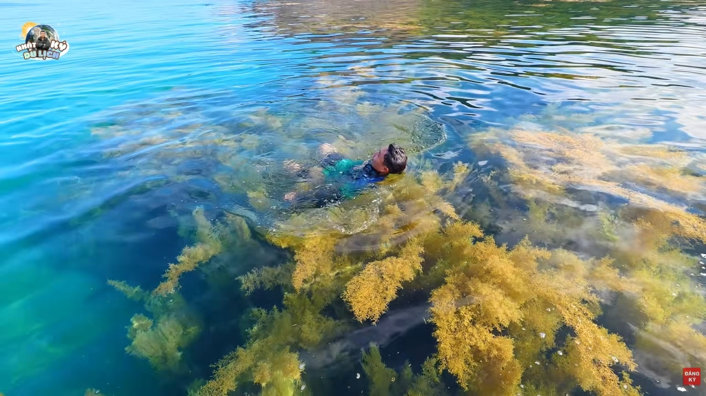
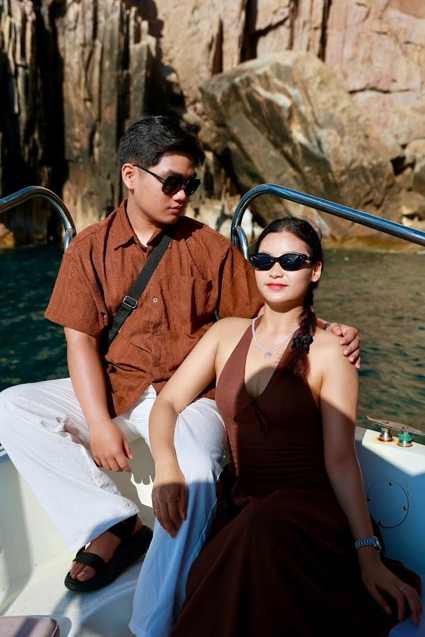
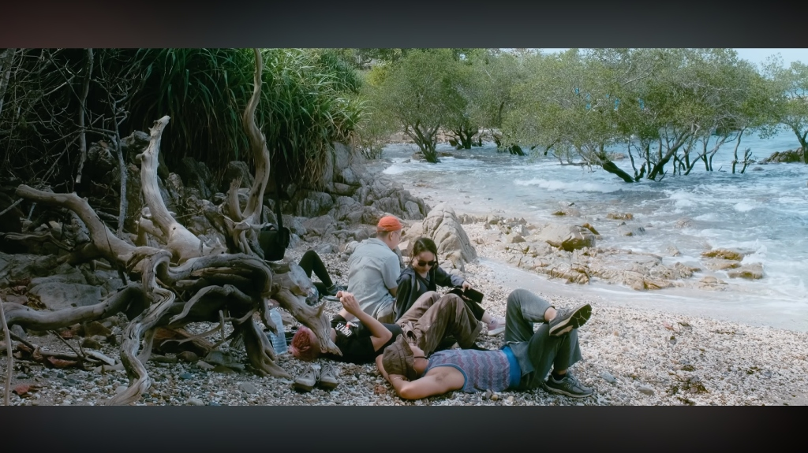

Những Điểm Đến Không Thể Bỏ Lỡ
Chạm vào thiên nhiên và lịch sử qua từng khung cảnh.

Vịnh Đầm Tre
Vịnh biển hoang sơ kín gió nằm phía Bắc đảo Côn Sơn. Đặc biệt vào mùa rong mơ, dòng nước trong vắt để lộ cánh rừng rong mơ vàng óng lộng lẫy dưới lòng biển.
Giới thiệu chi tiết
Nằm ở phía Bắc của Côn Đảo, vịnh Đầm Tre hoang sơ được bao bọc bởi rừng tre và rừng ngập mặn nên khá kín gió. Đặc biệt, nơi đây vào mùa rong mơ (tháng 4 - tháng 6) sẽ có cảnh sắc siêu đẹp khi cả vịnh biển được bao phủ bởi những thảm rong vàng óng dưới làn nước xanh trong vắt, kết hợp hoạt động ngắm chim yến về làm tổ.
Trải nghiệm nổi bật
- Tắm biển và thỏa thích bơi lội, check-in giữa thảm rong mơ vàng óng lộng lẫy.
- Lặn ống thở (snorkeling) ngắm rạn san hô và tham quan rừng tre, rừng ngập mặn.
- Quan sát thế giới tự nhiên của loài chim yến làm tổ trong mùa sinh sản hàng năm.
Thời điểm lý tưởng
Đặc biệt đẹp nhất là mùa rong mơ từ tháng 4 đến tháng 6 hằng năm. Nên ghé thăm lúc thủy triều lên để vịnh đầy nước xanh trong và thấy thảm rong mơ đẹp nhất.
Hình ảnh thực tế


Bãi Đầm Trầu
Bãi tắm thơ mộng được xem là đẹp nhất Côn Đảo, nổi tiếng với dải cát trắng mịn màng uốn lượn và trải nghiệm ngắm máy bay đáp cực gần.
Giới thiệu chi tiết
Bãi Đầm Trầu nằm gần sân bay Cỏ Ống, có cát trắng xốp mịn, núi ôm lấy biển theo hình vòng cung thơ mộng. Nơi đây luôn có sóng nhẹ, không gian yên tĩnh và được mệnh danh là bãi tắm đẹp nhất ở quần đảo Côn Đảo. Điểm độc đáo nhất là bạn có thể thoải mái tắm mát dưới biển và vừa ngắm những chiếc máy bay cất, hạ cánh sát sạt ngay trên đầu.
Trải nghiệm nổi bật
- Đón những khoảnh khắc check-in độc đáo khi máy bay hạ cánh cực thấp ngay trên bãi biển.
- Tắm mình trong làn nước xanh ngọc bích và thư giãn dưới bóng mát của rặng thông.
- Thưởng thức nước dừa mát lạnh cùng các món hải sản chế biến tươi ngon ngay tại bãi cát.
Thời điểm lý tưởng
Khoảng từ 14:00 đến 17:00 chiều là thời điểm đẹp nhất để ngắm máy bay và tận hưởng ánh nắng hoàng hôn dịu nhẹ.
Hình ảnh thực tế


Hòn Bảy Cạnh
Hòn đảo lớn thứ hai Côn Đảo, là khu bảo tồn rùa biển lớn nhất Việt Nam và sở hữu những rạn san hô nguyên sơ đẹp lộng lẫy.
Giới thiệu chi tiết
Hòn Bảy Cạnh là hòn đảo lớn thứ hai trong số 16 hòn đảo thuộc quần đảo Côn Đảo. Nơi đây được bao phủ hoàn toàn bởi rừng nhiệt đới nguyên sinh và hệ sinh thái biển vô cùng phong phú. Du khách có thể thuê thuyền hoặc cano ra đảo để thoải mái bơi lội, lặn ngắm san hô rực rỡ và đặc biệt là xem rùa mẹ đẻ trứng vào ban đêm.
Trải nghiệm nổi bật
- Tham gia tour lặn ngắm san hô tuyệt đẹp tại bãi biển hoang sơ của hòn đảo.
- Tham quan khu bảo tồn và học hỏi quy trình ấp nở trứng rùa, thả rùa con về đại dương.
- Chinh phục ngọn hải đăng cổ kính được xây dựng từ thời Pháp thuộc trên đỉnh núi.
Thời điểm lý tưởng
Mùa rùa sinh sản từ tháng 4 đến tháng 9 hằng năm là thời gian lý tưởng nhất để ghé thăm và trải nghiệm xem rùa đẻ trứng đêm.
Hình ảnh thực tế


Nhà tù Côn Đảo (Trại Phú Hải, Trại Phú Sơn)
Hệ thống di tích lịch sử oai hùng khét tiếng một thời, nơi giam giữ và chứng kiến tinh thần đấu tranh kiên cường của các chiến sĩ cách mạng.
Giới thiệu chi tiết
Nơi đây được mệnh danh là “địa ngục trần gian”, với nhiều khu vực biệt giam, chuồng cọp. Nhà tù rộng hơn 12.000 mét vuông gồm 10 khám lớn (phòng giam lớn), 20 hầm đá biệt giam, 1 khám đặc biệt, hầm xay lúa và khu đập đá. Trại Phú Hải và Phú Sơn là hai khu trại giam điển hình nhất của hệ thống nhà tù oai hùng này.
Trải nghiệm nổi bật
- Tận mắt chứng kiến khu "Chuồng cọp" Pháp/Mỹ với những hình thức biệt giam vô cùng khắc nghiệt.
- Lắng nghe những câu chuyện lịch sử xúc động về ý chí kiên trung của các chiến sĩ cách mạng Việt Nam.
- Tham quan phòng trưng bày di tích để hiểu rõ hơn về bức tranh toàn cảnh của hệ thống lao tù.
Thời điểm lý tưởng
Thích hợp tham quan vào ban ngày (08:00 - 11:30 sáng hoặc 14:00 - 16:30 chiều) để thuận tiện đi bộ ngoài trời và lắng nghe thuyết minh di tích.
Hình ảnh thực tế


Nghĩa trang Hàng Dương
Nghĩa trang Hàng Dương là nơi có mộ của hơn 2000 liệt sĩ và mộ Võ Thị Sáu.
Giới thiệu chi tiết
Nghĩa trang Hàng Dương là nơi có mộ của hơn 2000 liệt sĩ và mộ Võ Thị Sáu. Đây là điểm du lịch tâm linh quan trọng. Đến đây ngoài thắp hương, bạn nên chuẩn bị đồ lễ, không thể thiếu gương, lược, hoa tươi. Buổi tối là thời điểm du khách ghé thăm nghĩa trang để thăm viếng và cầu nguyện.
Trải nghiệm nổi bật
- Dâng hương tưởng niệm trang trọng tại đài bia trung tâm nghĩa trang liệt sĩ oai hùng.
- Viếng mộ chị Võ Thị Sáu lúc đêm muộn với lòng thành kính và biết ơn sâu sắc.
- Cảm nhận không khí tĩnh lặng, ấm áp dưới bóng những hàng cây bàng cổ thụ lịch sử.
Thời điểm lý tưởng
Khoảng thời gian từ 21:00 đến 23:59 đêm là thời điểm trang nghiêm và thiêng liêng nhất thường được đông đảo du khách lựa chọn ghé viếng mộ.
Hình ảnh thực tế


Cua mặt trăng
Cua mặt trăng là loài hải sản cực kỳ quý hiếm ở Côn Đảo.
Giới thiệu chi tiết
Cua mặt trăng là loài hải sản cực kỳ quý hiếm ở Côn Đảo. Sở dĩ gọi là cua mặt trăng vì trên lưng cua có nhiều hình tròn màu đỏ đậm, pha với màu hồng tươi, trông rất hấp dẫn. Khi hấp lên, bạn ăn miếng thịt cua chấm thêm chút muối tiêu xanh sẽ cảm nhận được vị ngọt của cua ở ngay đầu lưỡi. Ngoài ra, cua mặt trăng còn được chế biến theo nhiều cách khác như sốt me, nấu lẩu.
Trải nghiệm nổi bật
- Thưởng thức cua hấp muối tiêu chanh hoặc chấm muối ớt xanh để cảm nhận vị ngọt đậm đà nơi đầu lưỡi.
- Trải nghiệm các cách chế biến phong phú khác như cua mặt trăng sốt me chua ngọt hoặc nấu lẩu hải sản đậm vị.
- Tham quan và tự tay chọn cua tươi sống tại các bè nổi ở cảng Bến Đầm.
Thời điểm lý tưởng
Rất thích hợp để thưởng thức vào các bữa trưa hoặc bữa tối tại các nhà hàng hải sản ven biển hoặc bè nổi cảng Bến Đầm.
Hình ảnh thực tế


Mứt hạt bàng
Mứt hạt bàng là đặc sản nức tiếng làm quà tặng vô cùng ý nghĩa khi đi du lịch Côn Đảo.
Giới thiệu chi tiết
Quả bàng chín vàng ươm, bóc lớp thịt lộ ra hạt trắng nõn. Hạt bàng ở Côn Đảo được rang mặn với muối hay rang ngọt cùng đường. Hạt bàng ăn bùi, thơm giòn. Hầu như ai đến du lịch Côn Đảo cũng mua vài cân mứt hạt bàng về làm quà.
Trải nghiệm nổi bật
- Dùng thử cả hai hương vị mứt hạt bàng rang muối bùi ngậy và rang ngọt thơm lừng.
- Trò chuyện cùng các nghệ nhân bản địa để tìm hiểu công đoạn làm mứt hoàn toàn bằng tay tỉ mỉ.
- Mua những gói mứt xinh xắn về làm quà tặng ý nghĩa cho gia đình và bạn bè sau chuyến đi.
Thời điểm lý tưởng
Bạn có thể dễ dàng tìm kiếm, dùng thử và chọn mua mứt hạt bàng tại Chợ Côn Đảo hoặc các sạp hàng đặc sản dọc trung tâm thị trấn vào bất kỳ lúc nào.
Hình ảnh thực tế


Miếu Cậu (Thiếu Gia Miếu)
Miếu thờ Hoàng tử Cải bên cạnh sân bay Cỏ Ống, mang câu chuyện lịch sử đầy xúc động và đậm tính nhân văn.
Giới thiệu chi tiết
Miếu nằm gần khu vực bãi Đầm Trầu và sân bay Cỏ Ống. Nơi đây thờ Hoàng tử Cải (5 tuổi) – con trai của Chúa Nguyễn Ánh và Thứ phi Phi Yến. Nằm giữa không gian cây cối xanh mát, đây là điểm dừng chân yên tĩnh và linh thiêng thường được du khách ghé thăm ngay khi vừa đáp chuyến bay. Câu chuyện bi thương của hai mẹ con chính là nguồn gốc của câu ca dao nổi tiếng: "Gió đưa cây cải về trời / Rau răm ở lại chịu đời đắng cay".
Trải nghiệm nổi bật
- Tìm hiểu câu chuyện lịch sử đầy cảm xúc về Hoàng tử Cải và Thứ phi Phi Yến.
- Thắp hương dâng lễ cầu bình an tại ngôi miếu linh thiêng.
- Cảm nhận sự bình yên dưới vòm cây xanh ngắt quanh miếu.
Thời điểm lý tưởng
Nên ghé dâng hương dâng lễ ngay khi vừa đặt chân tới sân bay Cỏ Ống hoặc trên đường di chuyển ra bãi Đầm Trầu vì chúng rất gần nhau.
Hình ảnh thực tế


Miếu Năm Cô (Miếu Ngũ Hành)
Ngôi miếu linh thiêng thờ 5 vị nữ thần Ngũ Hành ở phía Nam đảo, chốn gửi gắm ước vọng mưa thuận gió hòa của ngư dân miền biển.
Giới thiệu chi tiết
Ngôi miếu này nằm ở phía Nam của đảo. Miếu thờ 5 vị nữ thần đại diện cho quyền năng của ngũ hành (Kim, Mộc, Thủy, Hỏa, Thổ). Người dân địa phương và những người đi biển thường đến đây cầu nguyện bình an, mưa thuận gió hòa và làm ăn phát đạt. Nơi đây rất thiêng liêng và mang đậm tín ngưỡng dân gian vùng biển.
Trải nghiệm nổi bật
- Dâng hương chiêm bái và tìm hiểu tín ngưỡng thờ Mẫu Ngũ Hành của người Việt.
- Chiêm ngưỡng khung cảnh miếu thờ yên tĩnh hướng ra phía đại dương trong xanh.
- Gặp gỡ và nghe các câu chuyện văn hóa miền biển từ người quản miếu.
Thời điểm lý tưởng
Nên đi viếng miếu vào buổi sáng mát mẻ cùng lịch trình khám phá cung đường Nam đảo tuyệt đẹp.
Hình ảnh thực tế


Hòn Tài, Hòn Trác
Nằm trong chuỗi các hòn đảo nhỏ lân cận đảo chính Côn Sơn. Dù Hòn Bảy Cạnh rất nổi tiếng, Hòn Tài và Hòn Trác lại là những "viên ngọc ẩn".
Giới thiệu chi tiết
Nằm trong chuỗi các hòn đảo nhỏ lân cận đảo chính Côn Sơn. Dù Hòn Bảy Cạnh rất nổi tiếng, Hòn Tài và Hòn Trác lại là những "viên ngọc ẩn". Hòn Tài sở hữu hệ sinh thái san hô vô cùng rực rỡ và là nơi bạn có cơ hội nhìn thấy loài khỉ mặt đỏ quý hiếm, cũng như theo dõi rùa biển lên bãi đẻ trứng.
Trải nghiệm nổi bật
- Lặn ống thở (snorkeling) khám phá thảm san hô tự nhiên tuyệt mỹ.
- Du ngoạn cano ngắm nhìn cảnh quan núi đá hùng vĩ giữa biển khơi.
- Cơ hội ngắm nhìn loài khỉ mặt đỏ quý hiếm đùa nghịch ven rìa đá.
Thời điểm lý tưởng
Lý tưởng nhất cho các chuyến tàu cano dạo biển và lặn ngắm san hô là mùa biển lặng, trời trong xanh từ tháng 3 đến hết tháng 9.
Hình ảnh thực tế



Bãi Đất Thắm
Bãi biển biệt lập hoang sơ tuyệt đối, để đến được đây du khách phải trải nghiệm đi bộ trekking băng qua các lối mòn rợp bóng của Vườn quốc gia Côn Đảo.
Giới thiệu chi tiết
Nằm ẩn mình sau những cánh rừng nhiệt đới của Vườn quốc gia Côn Đảo, Bãi Đất Thắm là một trong số ít những bãi biển còn giữ nguyên vẻ đẹp hoang dã nguyên bản nhất. Do không có đường xe chạy trực tiếp, du khách phải đi bộ trekking xuyên qua Vườn quốc gia Côn Đảo tầm 45 phút, mang lại cảm giác chinh phục thiên nhiên cực kỳ sảng khoái trước khi đắm mình vào bãi cát tĩnh lặng.
Trải nghiệm nổi bật
- Trải nghiệm đi bộ trekking xuyên rừng quốc gia, chiêm ngưỡng hệ sinh thái đa dạng.
- Tận hưởng bãi cát biệt lập hoàn toàn riêng tư, nghe tiếng sóng vỗ rì rào.
- Chụp ảnh sống ảo cùng nhánh cây khô trôi dạt nghệ thuật bên bờ biển sỏi đá.
Thời điểm lý tưởng
Nên đi vào buổi sáng mát mẻ để hành trình đi bộ băng rừng không bị quá nắng gắt, mang đầy đủ giày thể thao và nước uống.
Hình ảnh thực tế